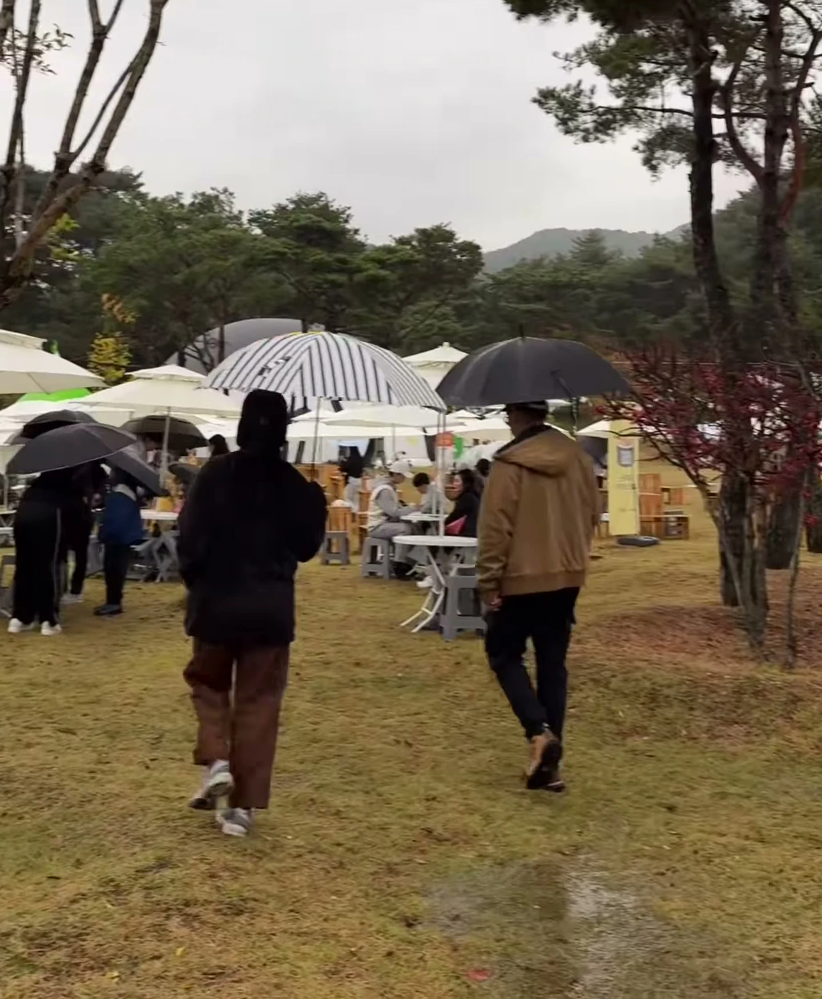
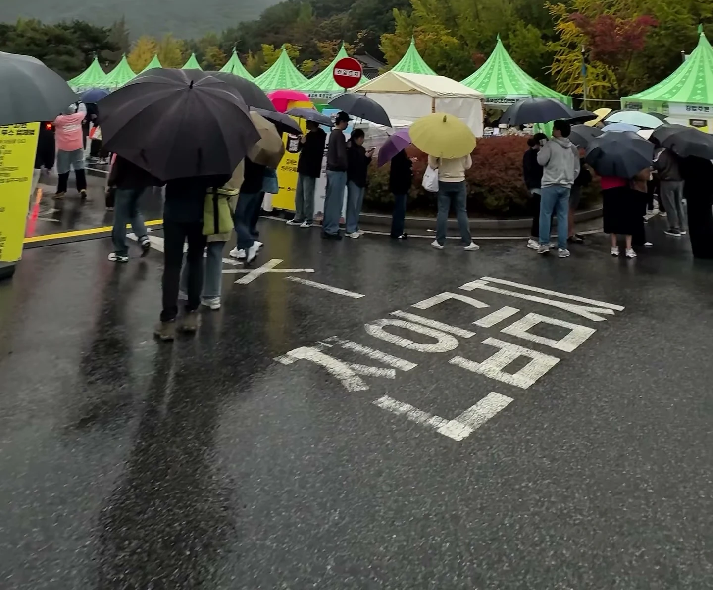
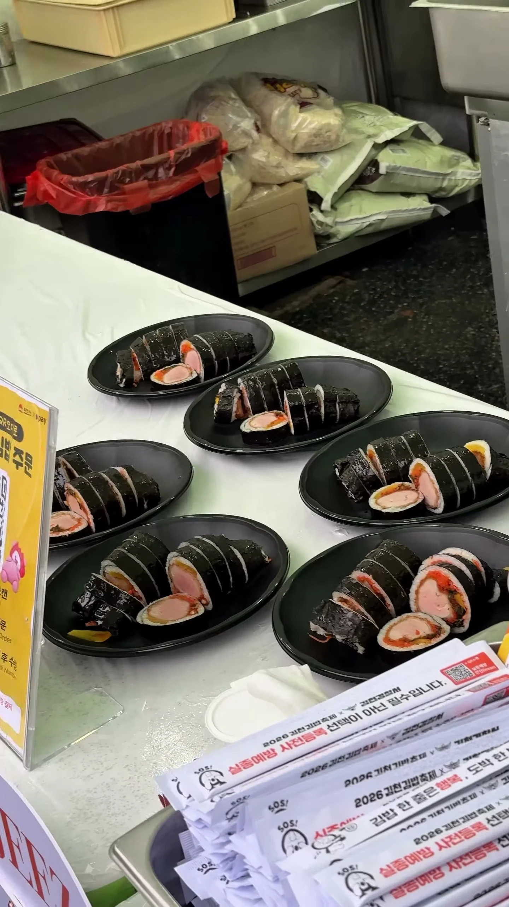
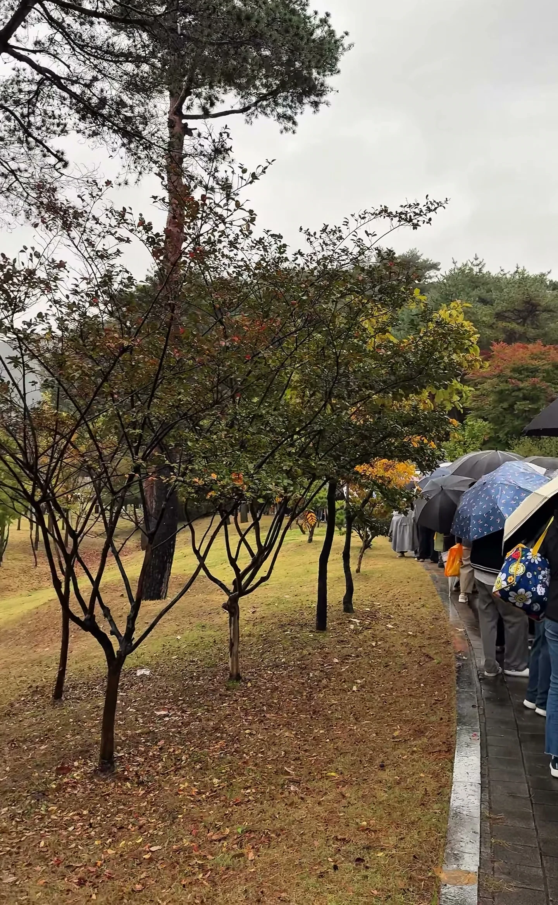
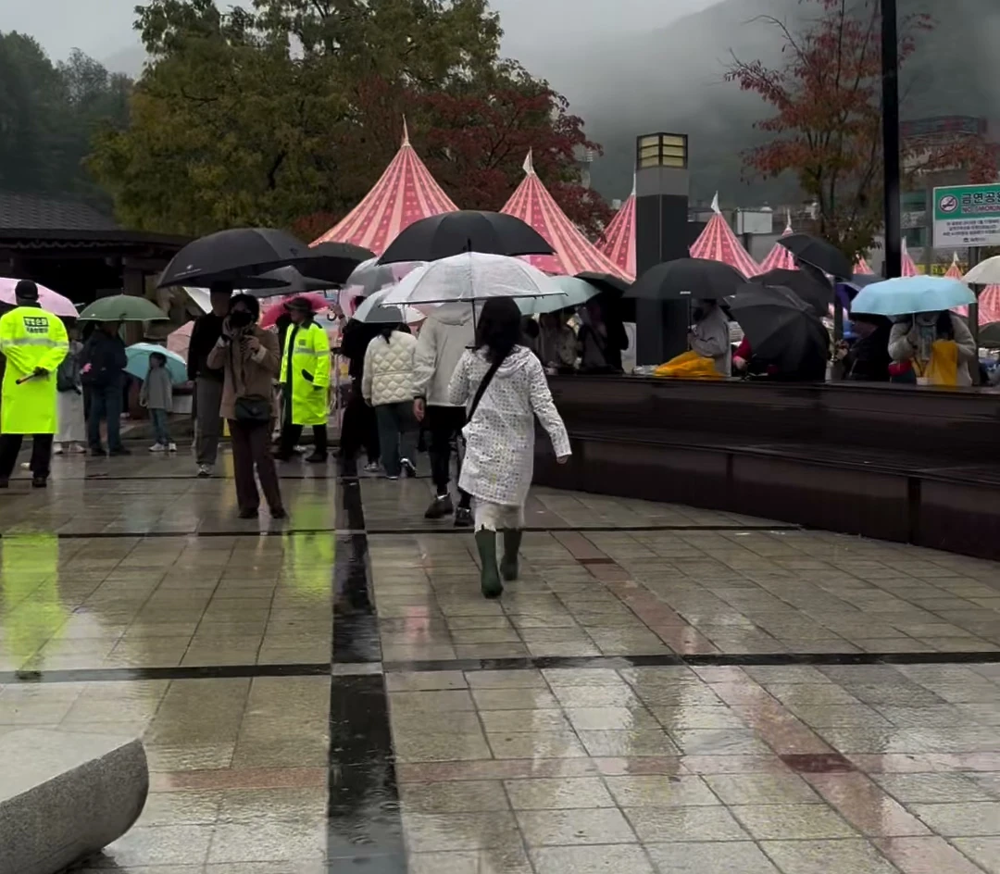

축제는 사람이 북적북적 해야지





축제는 사람이 북적북적 해야지
그래도 김밥은 맛나보이네 ㅋㅋ
눈치게임 실패
비오니까 오히려 운치있네
김천축제 유튜브 영상보니 열심히 준비했던데 하필 비가오는게 좀 아쉽네
분홍색 저건 뭐로 한거지
라이스페이퍼를 적양배추 우린 물로 적시면 될 것 같음
비오는날 김밥 개꿀인데..
비오는날 김밥에 라면에 떡튀순..
방금다녀왓는데 3번 26번 31번 김밥집 맛있음.
공원은 이쁨 비안오면 좋았겠음.
우산쓰는법 교육받아야되는 사람들 많음.